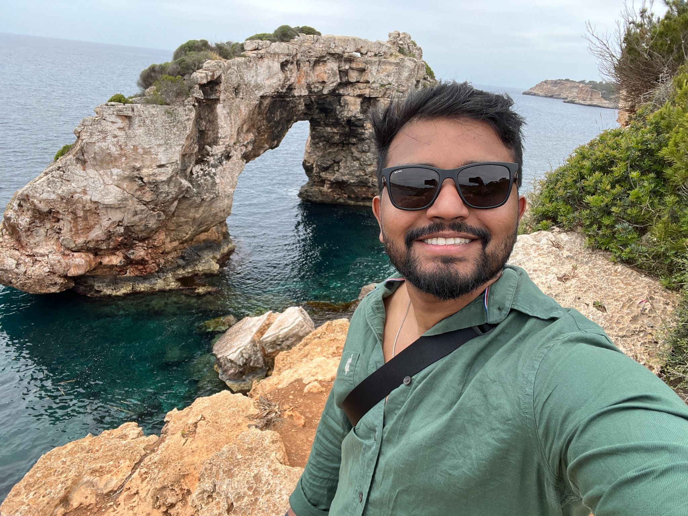
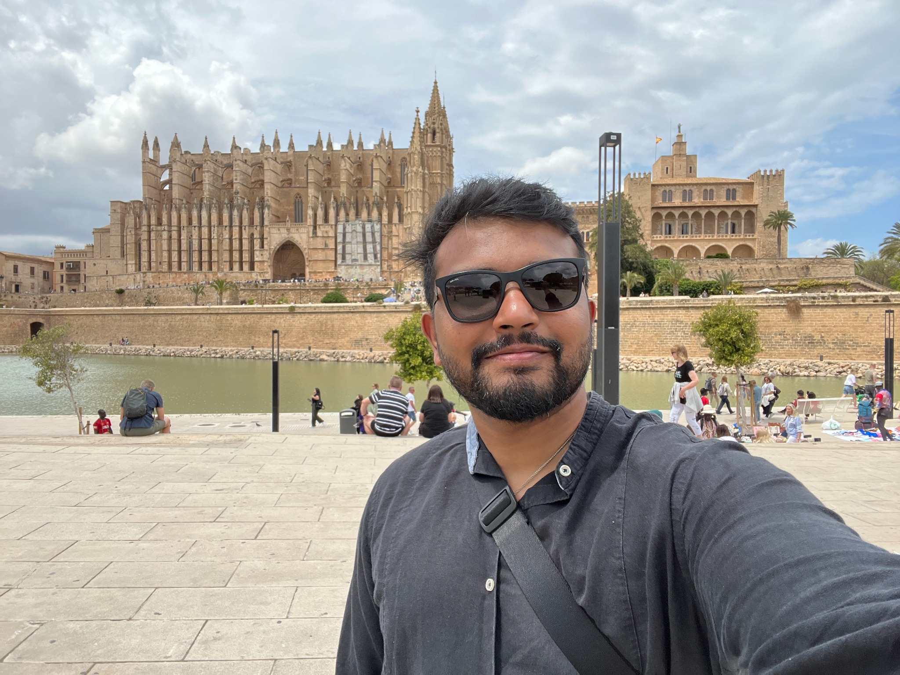
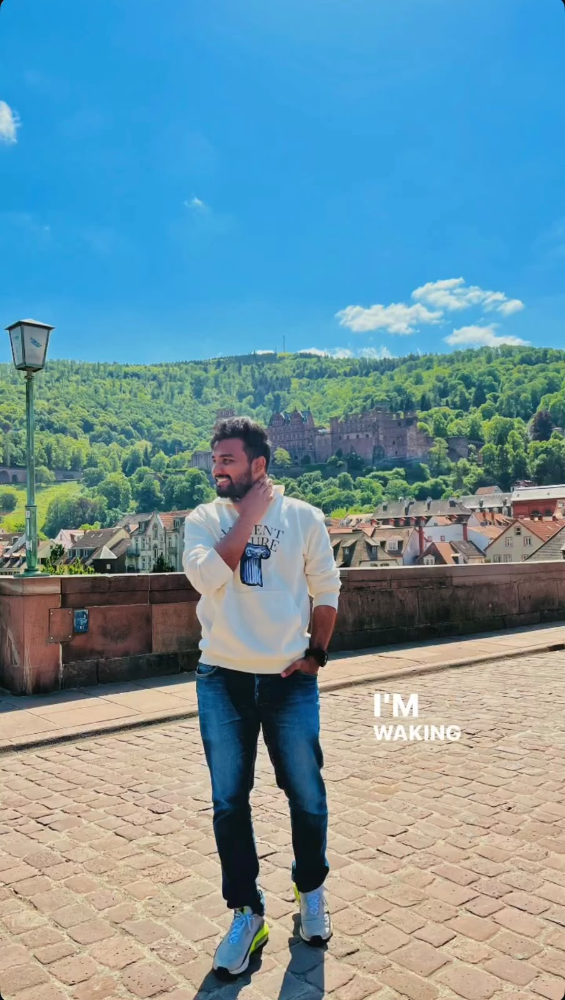
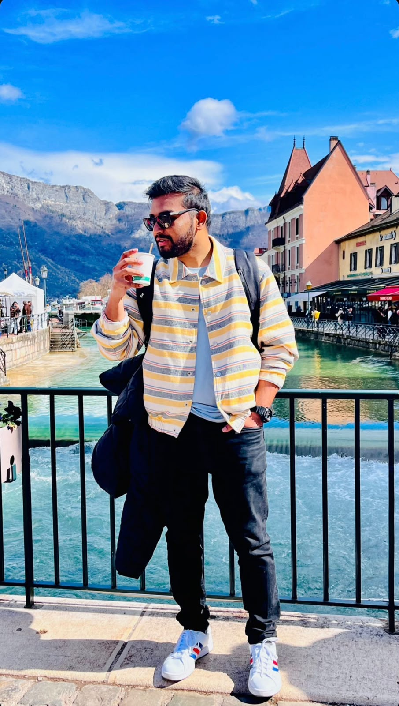
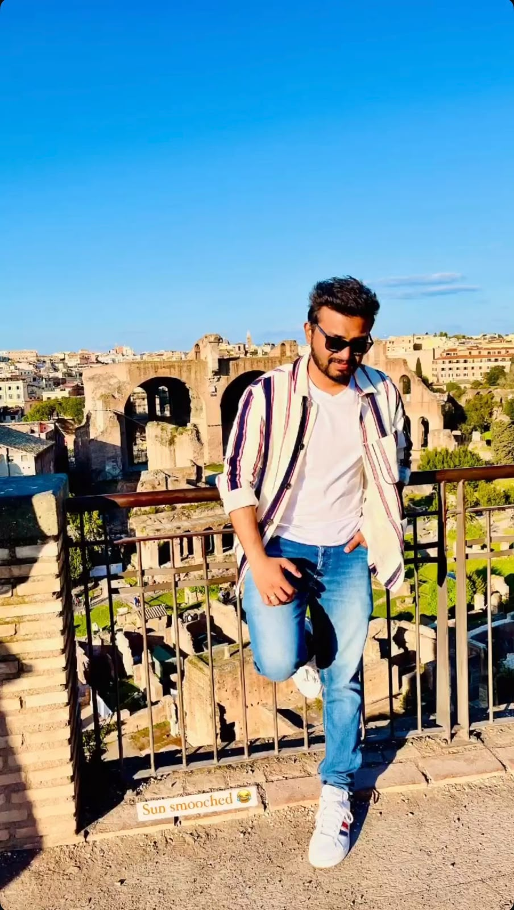
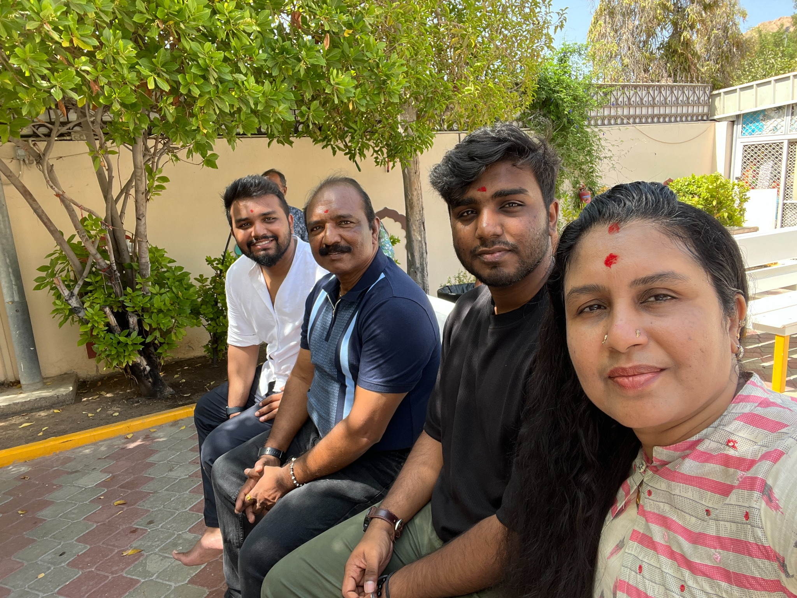

Formula 1
The one obsession that gets its own page.
I follow Formula 1 because the sport sits at an interesting intersection of engineering, strategy, people and split-second decisions. It is also a very good excuse to argue about tyre strategy.
The professional portfolio is only one part of the story. Here are some of the things that keep me interested when I am not thinking about data and processes.






I follow Formula 1 because the sport sits at an interesting intersection of engineering, strategy, people and split-second decisions. It is also a very good excuse to argue about tyre strategy.
Having grown up in Oman and later lived in India and Germany, I enjoy travelling and experiencing how different places work, communicate and feel.
I enjoy creating content, experimenting with videography and singing. Not everything needs to become a project or a KPI.
I like following technology trends and listening to podcasts about technology and psychology. I am interested in both how systems behave and why people behave the way they do.
Travel is part of the story, but so are the people I travel back to.
